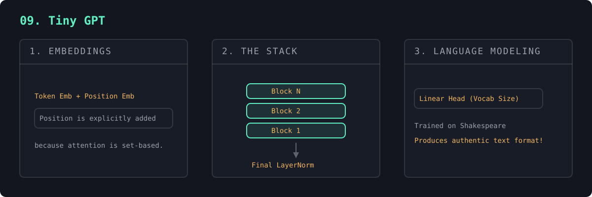

Everything converges. Token + position embeddings → a stack of blocks → an output head, trained on ~1MB of Shakespeare. From a 4.36 loss of pure noise, it learns — entirely on its own — the play format, character names, line breaks, and Shakespearean cadence.
This is a genuine, complete GPT (465K params). The architecture is identical to GPT-4; only the scale differs. The trained weights are saved to tiny_gpt.pt so every later step loads instantly.
A GPT is a decoder-only transformer. Tokens become embeddings; because attention is order-blind, a learned positional embedding is added so the model knows where each token sits. The sum flows through N stacked causal blocks, a final norm, and a linear head that produces a probability distribution over the vocabulary for every position.
Training uses next-token cross-entropy with teacher forcing: thanks to the causal mask, the model predicts the next token at every position simultaneously in one forward pass, and the loss averages over all of them — extremely efficient. Generation reverses this: sample a token, append it, repeat (autoregression). This is the entire GPT recipe; scaling laws say the loss falls predictably as you add parameters, data, and compute — the only real difference between this and GPT-4.

iter 0 train loss 4.365 iter 3000 train loss 1.493 val loss 1.674 === Generated Shakespeare === KING XI: Beliescapes not, if teach his such Lord, ROMEO: Whall suf yeten me assoous, being, where,
"""
#9 in the "NN to tiny LLM" ladder. *** A REAL GPT ***
Everything comes together. We assemble a complete decoder-only transformer —
the same architecture as GPT — and train it on ~1MB of Shakespeare to generate
new text one character at a time.
The full pipeline, all of which you've now built piece by piece:
tokens --[token embedding]--> vectors
+ [position embedding] (so the model knows ORDER)
--> [ N transformer blocks ] (#8: attention + MLP, stacked)
--> [ layernorm + linear head ] --> logits over the vocabulary
--> cross-entropy loss (#2's loss, unchanged)
--> loss.backward(); optimizer.step() (#5/#6: autograd does it all)
POSITION EMBEDDINGS are the one genuinely new piece: attention itself has no
notion of order (it's a weighted set), so we ADD a learned per-position vector
so "abc" and "cba" look different to the model.
This trains in ~1-2 min on CPU. It won't write masterpieces at this tiny size,
but it WILL learn Shakespearean rhythm, names, and word-like structure from
scratch. Increase the size knobs below for better (slower) results.
Run with: python 09_tiny_gpt.py
"""
import os
import torch
import torch.nn as nn
import torch.nn.functional as F
torch.manual_seed(1337)
CKPT_PATH = "tiny_gpt.pt" # trained weights are saved/loaded here
# ---- Hyperparameters (small, so it runs on a laptop CPU) ----
BLOCK_SIZE = 64 # max context length (how many chars the model sees)
N_EMBD = 96 # embedding dimension
N_HEADS = 4 # attention heads per block
N_LAYERS = 4 # number of transformer blocks stacked
DROPOUT = 0.1
LEARNING_RATE = 3e-3
MAX_ITERS = 3000
BATCH_SIZE = 32
EVAL_INTERVAL = 300
DEVICE = "cuda" if torch.cuda.is_available() else "cpu"
# --------------------------------------------------------------------------
# Data: char-level tokenizer over the Shakespeare corpus
# --------------------------------------------------------------------------
with open("input.txt", "r", encoding="utf-8") as f:
text = f.read()
chars = sorted(set(text))
VOCAB = len(chars)
stoi = {c: i for i, c in enumerate(chars)}
itos = {i: c for c, i in stoi.items()}
encode = lambda s: [stoi[c] for c in s]
decode = lambda ids: "".join(itos[i] for i in ids)
data = torch.tensor(encode(text), dtype=torch.long)
split = int(0.9 * len(data))
train_data, val_data = data[:split], data[split:]
def get_batch(source):
"""Grab BATCH_SIZE random chunks; targets are inputs shifted by one char."""
ix = torch.randint(len(source) - BLOCK_SIZE, (BATCH_SIZE,))
x = torch.stack([source[i:i + BLOCK_SIZE] for i in ix])
y = torch.stack([source[i + 1:i + BLOCK_SIZE + 1] for i in ix])
return x.to(DEVICE), y.to(DEVICE)
# --------------------------------------------------------------------------
# Model (the #8 block, plus embeddings + a language-model head)
# --------------------------------------------------------------------------
class Head(nn.Module):
def __init__(self, head_size):
super().__init__()
self.key = nn.Linear(N_EMBD, head_size, bias=False)
self.query = nn.Linear(N_EMBD, head_size, bias=False)
self.value = nn.Linear(N_EMBD, head_size, bias=False)
# A non-learned buffer holding the causal mask.
self.register_buffer("tril", torch.tril(torch.ones(BLOCK_SIZE, BLOCK_SIZE)))
self.dropout = nn.Dropout(DROPOUT)
self.head_size = head_size
def forward(self, x):
B, T, C = x.shape
q, k, v = self.query(x), self.key(x), self.value(x)
scores = q @ k.transpose(-2, -1) / self.head_size ** 0.5
scores = scores.masked_fill(self.tril[:T, :T] == 0, float("-inf"))
weights = self.dropout(F.softmax(scores, dim=-1))
return weights @ v
class MultiHeadAttention(nn.Module):
def __init__(self, n_heads, head_size):
super().__init__()
self.heads = nn.ModuleList([Head(head_size) for _ in range(n_heads)])
self.proj = nn.Linear(N_EMBD, N_EMBD)
self.dropout = nn.Dropout(DROPOUT)
def forward(self, x):
out = torch.cat([h(x) for h in self.heads], dim=-1)
return self.dropout(self.proj(out))
class FeedForward(nn.Module):
def __init__(self):
super().__init__()
self.net = nn.Sequential(
nn.Linear(N_EMBD, 4 * N_EMBD),
nn.ReLU(),
nn.Linear(4 * N_EMBD, N_EMBD),
nn.Dropout(DROPOUT),
)
def forward(self, x):
return self.net(x)
class Block(nn.Module):
def __init__(self):
super().__init__()
head_size = N_EMBD // N_HEADS
self.attn = MultiHeadAttention(N_HEADS, head_size)
self.ffwd = FeedForward()
self.ln1 = nn.LayerNorm(N_EMBD)
self.ln2 = nn.LayerNorm(N_EMBD)
def forward(self, x):
x = x + self.attn(self.ln1(x))
x = x + self.ffwd(self.ln2(x))
return x
class TinyGPT(nn.Module):
def __init__(self):
super().__init__()
self.token_emb = nn.Embedding(VOCAB, N_EMBD) # what each token is
self.pos_emb = nn.Embedding(BLOCK_SIZE, N_EMBD) # where it sits
self.blocks = nn.Sequential(*[Block() for _ in range(N_LAYERS)])
self.ln_f = nn.LayerNorm(N_EMBD)
self.head = nn.Linear(N_EMBD, VOCAB) # -> scores per char
def forward(self, idx, targets=None):
B, T = idx.shape
tok = self.token_emb(idx) # (B, T, C)
pos = self.pos_emb(torch.arange(T, device=idx.device)) # (T, C)
x = tok + pos # add position
x = self.blocks(x)
x = self.ln_f(x)
logits = self.head(x) # (B, T, VOCAB)
loss = None
if targets is not None:
loss = F.cross_entropy(logits.view(-1, VOCAB), targets.view(-1))
return logits, loss
@torch.no_grad()
def generate(self, idx, max_new_tokens):
"""Autoregressive sampling: predict next char, append, repeat."""
for _ in range(max_new_tokens):
idx_cond = idx[:, -BLOCK_SIZE:] # keep within context window
logits, _ = self(idx_cond)
logits = logits[:, -1, :] # only the last position
probs = F.softmax(logits, dim=-1)
next_id = torch.multinomial(probs, num_samples=1)
idx = torch.cat([idx, next_id], dim=1)
return idx
@torch.no_grad()
def estimate_loss(model):
model.eval()
out = {}
for name, source in [("train", train_data), ("val", val_data)]:
losses = torch.zeros(20)
for k in range(20):
x, y = get_batch(source)
_, loss = model(x, y)
losses[k] = loss.item()
out[name] = losses.mean().item()
model.train()
return out
def train_model(model):
"""Run the optimization loop, then save the weights to CKPT_PATH."""
optimizer = torch.optim.AdamW(model.parameters(), lr=LEARNING_RATE)
for it in range(MAX_ITERS + 1):
if it % EVAL_INTERVAL == 0:
losses = estimate_loss(model)
print(f"iter {it:4d} train loss {losses['train']:.3f} "
f"val loss {losses['val']:.3f}")
x, y = get_batch(train_data)
_, loss = model(x, y)
optimizer.zero_grad(set_to_none=True)
loss.backward()
optimizer.step()
# Save weights + the vocab + the architecture knobs, so any script (or a
# later run) can rebuild this exact model and load these weights.
torch.save({
"model": model.state_dict(),
"chars": chars,
"config": {
"BLOCK_SIZE": BLOCK_SIZE, "N_EMBD": N_EMBD,
"N_HEADS": N_HEADS, "N_LAYERS": N_LAYERS, "VOCAB": VOCAB,
},
}, CKPT_PATH)
print(f"\nsaved trained model -> {CKPT_PATH}")
if __name__ == "__main__":
model = TinyGPT().to(DEVICE)
n_params = sum(p.numel() for p in model.parameters())
print(f"device: {DEVICE} | vocab: {VOCAB} chars | parameters: {n_params:,}\n")
if os.path.exists(CKPT_PATH):
# Already trained once — load instantly instead of retraining.
ckpt = torch.load(CKPT_PATH, map_location=DEVICE)
model.load_state_dict(ckpt["model"])
print(f"loaded trained model from {CKPT_PATH} "
f"(delete it to force a retrain)\n")
else:
train_model(model)
print("\n=== Generated Shakespeare ===\n")
start = torch.zeros((1, 1), dtype=torch.long, device=DEVICE) # newline seed
print(decode(model.generate(start, max_new_tokens=500)[0].tolist()))